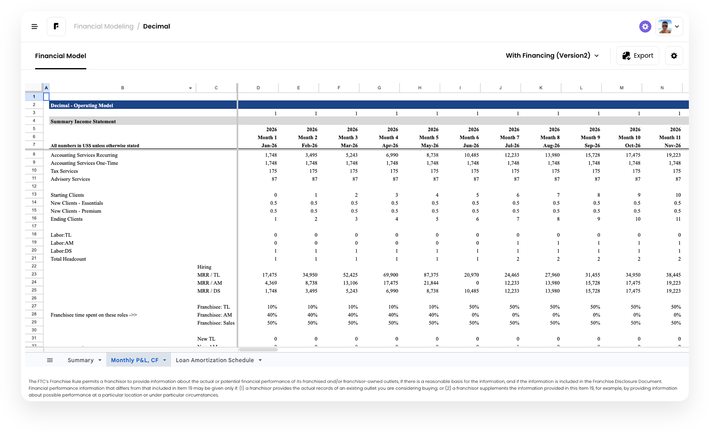
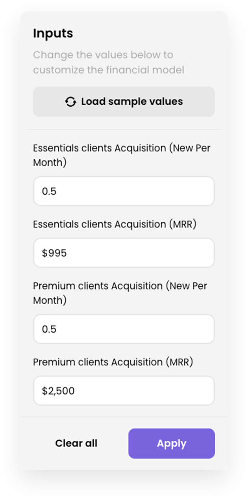
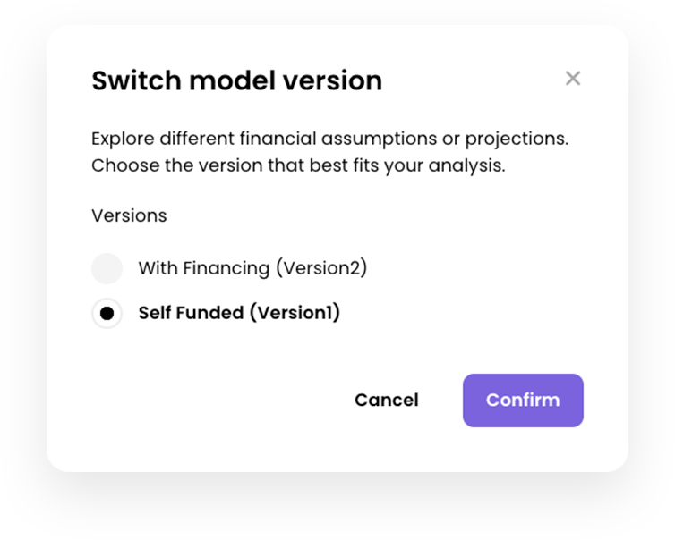
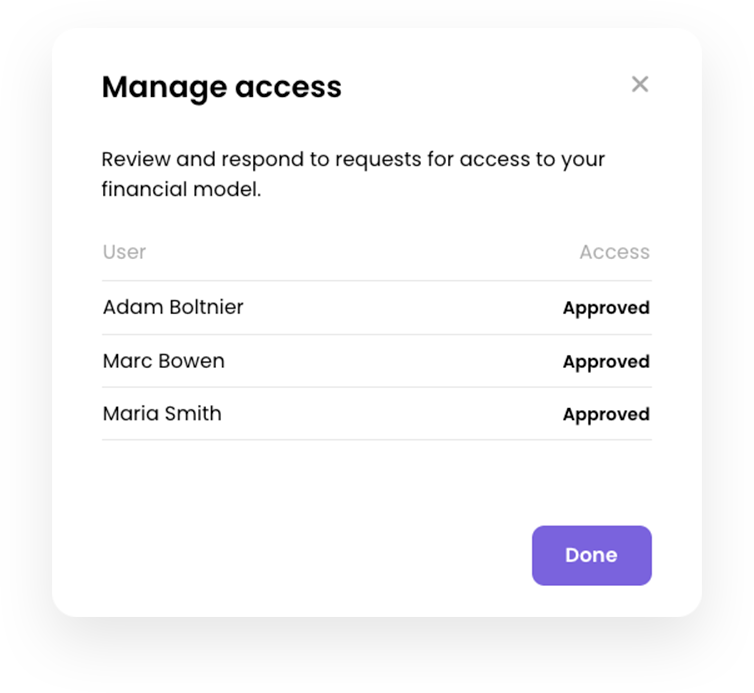

The Solution
Wefranch works with franchisors to understand their business model, and our modeling experts develop a template that allows prospective franchisees to input their own assumptions and see how the business could perform based on those inputs.




This tool increases transparency by allowing franchisees to see the level of execution they would need to achieve their goals, as well as any fees they would be required to pay.
We are compliant with franchise laws because we never publish financial performance representations. Instead, we provide an interactive tool that requires prospective franchisees to input their own assumptions.